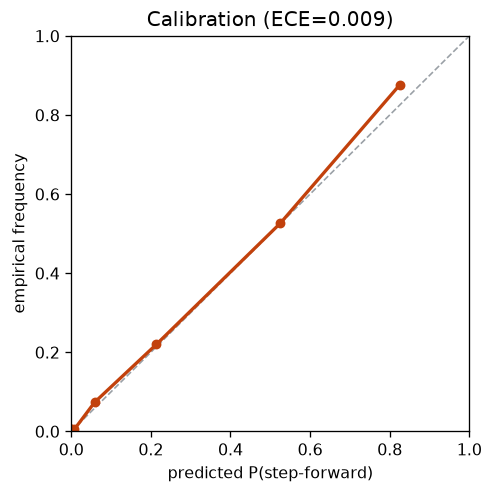
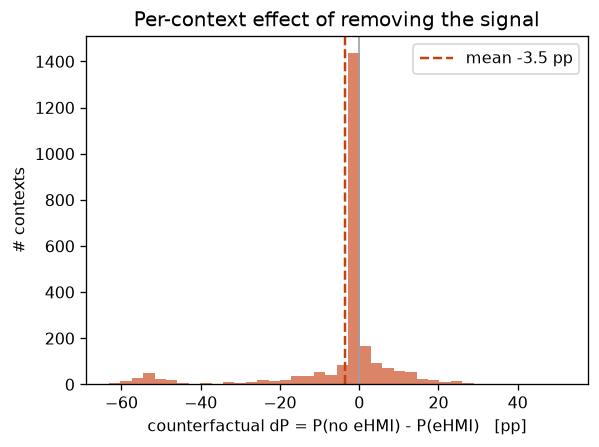

① 事故の責任・認証を数字で語る
車の合図に対する歩行者ステップ確率を校正して出し、反実で『合図を消すと確率が何%上がるか』を答える（eHMI）
0.017 校正ECE
0.959 識別AUROC
-3.2pp 反実ΔP(平均)
29.8% |ΔP|>5pp の割合
1. このデータは何か eHMI （TU Delft coupled simulator, 20セッション395試行, 122k step）。各stepに歩行者の瞬間移動(dfwd/dlat)、車との距離rng・接近率appr・TTC・方位、そして車の合図 eHMI∈{None,Left,Right}。学習はセッション1–16、検証はセッション17–20（held-out）。2. 何を・どう学習したか 条件付き Normalizing Flow（zuko NSF）で log p(歩行者移動 | 車の状態, eHMI合図) を学習。そこから前方ステップ閾値 τ=0.06 を超える確率 P(step | 文脈) をサンプリングで推定＝『飛び出しやすさ』の校正確率。反実 は文脈の eHMI を実際の合図→None に差し替えて再評価し ΔP を測る。3. 結果 held-out で校正良好（ECE=0.017 、対角線にほぼ一致）＝『◯%と言えば本当に◯%』。予測確率は事象を強く識別（AUROC=0.959 ）。反実（合図→None）の平均効果は -3.2pp （このシミュレータでは合図が前方ステップを抑える方向には出ず、むしろ僅かに増）。ただし効果は文脈依存で |ΔP|>5pp の場面が 29.8% 存在＝『どの場面で合図が効く/逆効果か』を校正済み確率で個別に言える。

信頼度図：予測ステップ確率 vs 実測頻度（対角線＝完全校正） 
反実：合図を消したときのステップ確率変化ΔPの分布（0付近＝小、裾＝効く場面） 4. 図の見方 左 ＝信頼度図。予測確率(横)と実測頻度(縦)が対角線に乗るほど『8%と言ったら本当に8%』＝法廷・認証で使える数字。右 ＝反実効果ΔPの分布。0付近＝合図の有無で変わらない場面、裾＝合図が大きく効く（または逆効果の）場面。5. 解釈と意味・使い道 ただの予測ではなく校正された確率＋反実 なので、効果の符号や大きさをデータから正直に読める（ここでは平均効果は小＝この合図は万能でない）。この機構は「この合図・このタイミングでの飛び出し確率は◯%」「0.5秒早ければ◯%→◯%」という責任按分・型式認証・合図仕様 の数字に使える。実交通への一般化は PIE / Euro-PVI で追試予定（④と接続）。
条件付き Normalizing Flow（zuko NSF）で自動生成。
NF×生活データ探索シリーズの一部。